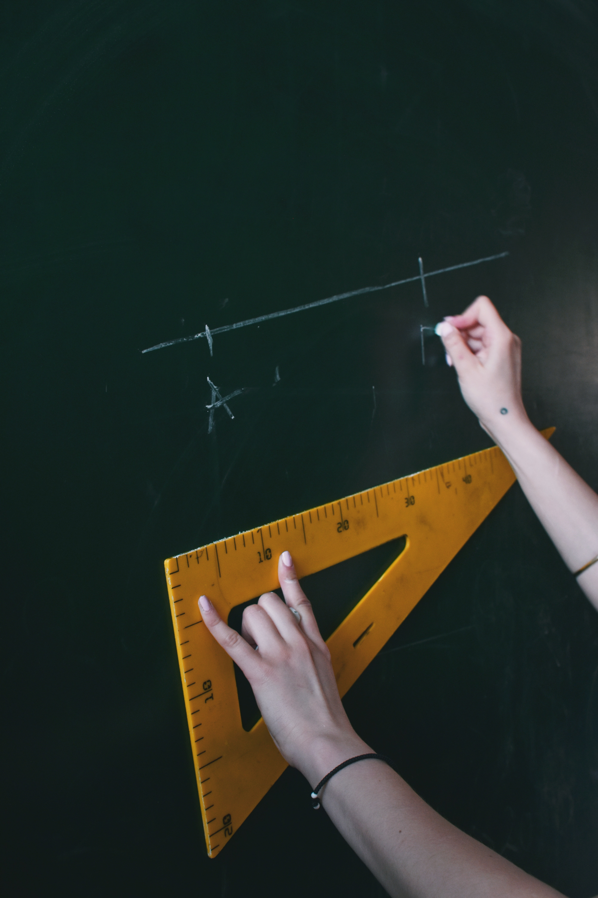

Study
Teacher
Despite my young age, I already did several studies. The first study after high school was primary teacher. I thought it would be easy and fun to entertain the children. Beside who doesn't want extra vacation? In my first year I noticed that children can be annoying creatures. It wasn't the job for me, but my mom pushed me and I completed my first bachelor.
Applied psychology
After my previous study, I wanted to do something different. I thought psychology would be an interesting choice. So I started with that. The study itself was nice. I learned a lot of different things about people and how you can interact with them. Also, I learned a lot about myself an think patterns. It was a very useful study to just develop myself and work on my people skills. Despite that I enjoyed the study, I didn't enjoyed my work that much. Not that I completely hated it, but I didn't see myself working in HR for twenty or thirty years. I decided to think again about what I really want to do.

Informatics
I thought about what can I enjoy and what could fascinate me. The thing that I enjoyed the most was gaming and maybe software. I started to look up some coding videos en read some information about informatics and I found it very interesting. So I started with my third study Informatics. I combined it with my full time job, because I couldn't stay in school forever. At this moment I'm in my first year and it is going well. It's not always easy to combine it with a full-time job, but I try to plan things well and I try to split my first year in two years. The most important thing now is to focus on my new job and keep the school aside for a moment, but I'm going to pick it up as soon as I can.